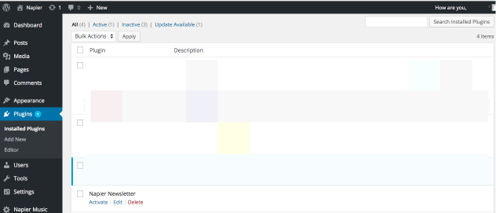

You need to create a form where visitors can enter their email address.
Once the address has been validated, store it into your database.
If the address does not validate, display the form again with the email provided in the email field and an error message.
Please version or backup your code, we will reuse this example for the security practical. Whereas instruction will be detailed for how to create the plugin, you should be able to version the plugin yourself. Because this is a very generic plugin, I recommend you to store it on a separate repository and add it as a submodule in your main project.
Bonus: create an administration interface to display the list of addresses, and create the form as a shortcode embeddable in any post.
Have a look at the documentation for WordPress developers to get the big picture: WordPress developer: plugin.
For this practical, we are goinf to assume that you already have a working instance of WordPress installed (with your custom theme/themes).
Using your preferred IDE or text editor, open your /wp-content/plugins directory and create a new folder called napier-newsletter in it. Now create a new PHP file with the same name inside of the recently created directory (napier-newsletter.php).
First step in creating a plugin is to setup the plugin details. This is done by adding information in a DocBlock comment on top of the main plugin file. Here, edit /wp-content/plugins, and add the following lines:
<?php
/*
Plugin Name: Napier Newsletter
*/
By browsing the plugin section of your administration interface, you should be able to see your plugin. For now, the plugin is disabled (this is a setting stored in database).
Note: we only provided a name in the comment above, try the same with more details and see how the display changes.
<?php
/*
Plugin Name: Napier Newsletter
Description: Simple WordPress plugin to allow email addresses gathering for a newsletter system
Version: 1.0
Author: Thomas Dutrion
Author URI: https://github.com/tdutrion
*/
This tutorial is partially based on Sitepoint: Build your own WordPress contact form plugin in 5 minutes. For maintenability reasons, we will try to extract as much code as possible from the main file, and split it by file type (for instance try never to put HTML inside of an HTML function, mixing concerns is not a good practice and prevent your tools to help you with code suggestion and syntax coloration).
First create an HTML file for the form. Call it form-template.php.
<form action="<?= esc_url($_SERVER['REQUEST_URI']) ?>" method="post">
<p>
<label>
Email address:
<input type="email" name="napier_newsletter_email" value="<?= (isset($_POST['napier_newsletter_email']) ? esc_attr($_POST['napier_newsletter_email']) : '') ?>" size="255">
</label>
</p>
<p>
<input type="submit" name="napier_newsletter_submit" value="Register"/>
</p>
</form>
Note: the field names are prefixed with napier_newsletter in order to not collide with other forms. We will use the submit button name to verify if data has been sent, so once again watch out for names.
Now, link this code to your plugin. In your napier-newsletter.php file, add a new function called napier_newsletter that will be responsible for displaying the form.
/*
Plugin Name: Napier Newsletter
Description: Simple WordPress plugin to allow email addresses gathering for a newsletter system
Version: 1.0
Author: Thomas Dutrion
Author URI: https://github.com/tdutrion
*/
function napier_newsletter() {
include 'form-template.php';
}
Once this is done, you can display your form anywhere on your site by using the plugin template tag (using the theme twentyfifteen, edit header.php and add the following code after <?php get_sidebar(); ?>):
<aside class="widget">
<?php napier_newsletter(); ?>
</aside>
At the end of the practical, as a bonus, you will see how to use this function to create a shortcode, which can then be used by your end-users.
As you are now able to display your form, you may want to add some processing when someone send you some data.
In order to process the form, we will need more functions, and we will therefore need to refactor the existing napier-newsletter.php code.
<?php
/*
Plugin Name: Napier Newsletter
Description: Simple WordPress plugin to allow email addresses gathering for a newsletter system
Version: 1.0
Author: Thomas Dutrion
Author URI: https://github.com/tdutrion
*/
function form_validation($emailAddress) {
include 'form-validation.php';
}
function form_processing($emailAddress) {
include 'form-processing.php';
}
function form_rendering() {
include 'form-template.php';
}
function napier_newsletter() {
if (isset($_POST['napier_newsletter_submit'])) {
$emailAddress = filter_input(INPUT_POST, 'napier_newsletter_email');
form_validation($emailAddress);
form_processing($emailAddress);
}
form_rendering();
}
Note how we changed the napier_newsletter() function so it tests whether data has been sent, filter, verify and process the data if needed and finally displays the form. The previous content of napier_newsletter has been moved to form_rendering.
form_validation and form_processing have been added to respectively handle the form validation and the data processing. Create both files required with the following content:
form-validation.php
<?php
global $napier_newsletter_errors;
$napier_newsletter_errors = new WP_Error;
if (!is_email($emailAddress)) {
$napier_newsletter_errors->add('email_invalid', 'Email is not valid');
}
if (email_exists($emailAddress)) {
$napier_newsletter_errors->add('email', 'Email address already registered');
}
if (is_wp_error($napier_newsletter_errors)) {
foreach ($napier_newsletter_errors->get_error_messages() as $error) {
echo '<div>';
echo '<strong>ERROR</strong>:';
echo $error . '<br/>';
echo '</div>';
}
}
form-processing.php
<?php
global $napier_newsletter_errors;
if (1 > count($napier_newsletter_errors->get_error_messages())) {
$userdata = [
'email' => $emailAddress,
];
// add processing here (for instance save to database)
echo "You suscribed to the newsletter with your email address {$emailAddress}.";
}
Please spend some time understanding the code above. Ask questions if you get stuck on the PHP syntax.
Try the plugin now, and see how it behaves.
We haven't persisted the data anywhere yet. We will store the data in a new table in the main database, that should be created when the plugin is enabled and destroyed when the plugin is disabled or removed.
Once again, have a look at the documentation before continuing: Codex: creating tables with plugins. Because documentation is not always the easiest to understand how things work, have a look at this blog post: PippinsPlugins: create database tables when plugin is activated.
As described in the last resource, we will add some code in the main plugin file (napier-newsletter.php):
// function to create the DB / Options / Defaults
function napier_newsletter_plugin_options_install() {
global $wpdb;
$napier_newsletter_db_name = $wpdb->prefix . 'napier_newsletter';
// create database table
if($wpdb->get_var("show tables like '$napier_newsletter_db_name'") != $napier_newsletter_db_name) {
$sql = "CREATE TABLE {$napier_newsletter_db_name} (
email VARCHAR(255) NOT NULL,
PRIMARY KEY (email)
);";
require_once(ABSPATH . 'wp-admin/includes/upgrade.php');
dbDelta($sql);
}
}
// run the install scripts upon plugin activation
register_activation_hook(__FILE__, 'napier_newsletter_plugin_options_install');
If you want, you can add a method that dumps data to a file or send an email with the data from the table and remove that table, and then add it to the register_deactivation_hook.
If you use a shortcode, you can also add a method on desactivation or removal that is looking for posts using your shortcode and block the required action.
Now, add some more code to the previously created form-processing.php file to save the email to the database. Find an updated version below:
<?php
global $napier_newsletter_errors;
global $wpdb;
if (1 > count($napier_newsletter_errors->get_error_messages())) {
$userdata = [
'email' => $emailAddress,
];
$table = "{$wpdb->prefix}napier_newsletter";
$wpdb->insert($table, $userdata, ['%s']);
echo "You suscribed to the newsletter with your email address {$emailAddress}.";
}
You have now created a complete custom WordPress plugin. Have a look at your code and look at how you could improve it.
As the functions to display and process the form already exist, we only need to register the main function as a shortcode using the following code (in the main plugin file napier-newsletter.php):
// Register a new shortcode: [use_napier_newsletter]
add_shortcode('use_napier_newsletter', 'napier_newsletter_shortcode');
// The callback function that will replace [book]
function napier_newsletter_shortcode() {
ob_start();
napier_newsletter();
return ob_get_clean();
}
Now try to use the shortcode as part of the existing posts.
Note: in the code for the shortcode, we are using ob_start and ob_get_clean to buffer the output instead of printing it on the screen when the function is called, in order to display it to the exact location of the shortcode. Try remove it to see how it behaves.
Because this is an advanced feature, you can do that by yourself during the practical or at home. Use the WordPress Codex to learn how to build this feature.